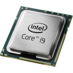
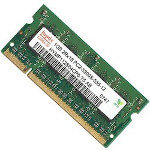
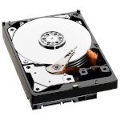
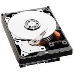

a computer cannot function without having at the very minimum the parts listed below.
Processor - Component that executes instructions from the software and hardware
Memory - Temporary primary storage for data traveling between the storage and CPU
Motherboard - Component that connects all components
Storage device - Slower secondary storage that permanently stores data.
However, if you had a computer with only the minimum parts above, you would be unable to communicate with it until you connected at least one input device (e.g., keyboard). Also, for you to see what is happening, you would need at least one output device (e.g., monitor).
  

Designed by Mohamed Anis MANI © for the Web course for 2ndTI class